AuditFlow AI
의료기기 제조사의 FDA/QMSR 모의 감사에서, 감사관 요청 하나를 증빙 검색 → 검증 → QA 승인 → 외부 제출(ZIP)까지 한 추적 경로로 관리하는 플랫폼입니다(합성 문서 109건). LLM은 요청 추출과 색인용 문맥 생성에만 쓰고, 증빙이 적격한지와 공개해도 되는지는 Python 규칙과 사람(QA)이 정합니다.
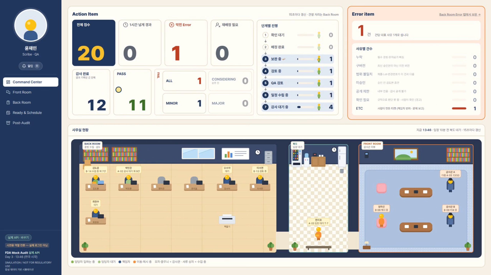
Command Center 화면 (실제 API 모드, 합성 데이터). 화면은 팀 공통 작업이고, 오른쪽 Error item의 사유별 건수(누락·구버전·범위 불일치·미승인·공개 제한·확인 필요)는 내가 만든 검증 규칙의 결과입니다.
판정과 공개는 governance 모듈 한 곳에서 결정합니다
검색 관련성, 증빙 적격성, 외부 공개 허용을 서로 다른 판정으로 나눴습니다. 검색(팀원 담당)이 아무리 높은 점수를 줘도 그 점수는 적격성과 공개 판정의 입력이 되지 않습니다. 제가 맡은 부분은 검색 이후의 검증·승인·공개 구간과, 그 아래 PostgreSQL 스키마 전체입니다.
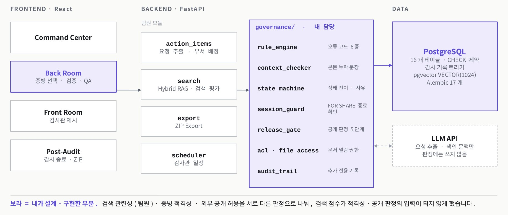
팀원
- 유수환 · 기획·UX: 공통 화면, 요청 추출, 부서 매핑, ZIP Export
- 최윤지 · AI 검색·평가·인프라: 파싱·색인, Hybrid RAG, 검색 평가, Docker Compose·CI
내 담당
- DB 스키마·Alembic, Rule Engine, Context Checker, Error Ticket
- 상태 머신, QA 승인, 감사 종료, Release Gate, ACL, Audit Trail
- 증빙·검증·QA 화면, WBS 작업 11개
업무 규칙을 코드가 아니라 테이블 제약과 트리거에 두었습니다
애플리케이션 코드의 검사는 다른 경로에서 빠질 수 있습니다. 그래서 반드시 지켜야 하는 규칙은 DB가 직접 지키게 했습니다. 담당자와 책임자는 같을 수 없고(CHECK), 감사 기록은 트리거가 UPDATE·DELETE·TRUNCATE를 거부하며, 공개 승인은 지울 수 없고 철회만 됩니다.
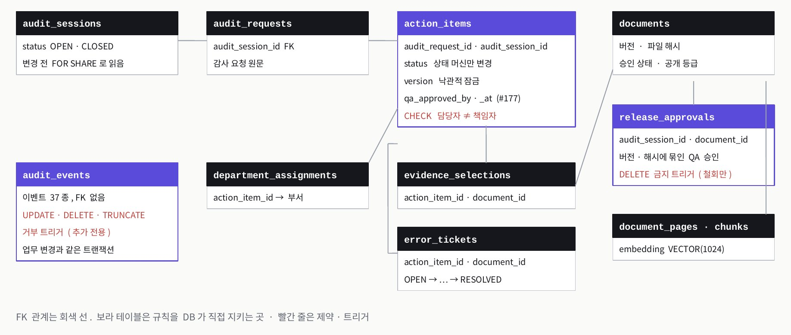
CREATE TRIGGER trg_audit_events_no_update_delete BEFORE UPDATE OR DELETE ON audit_events FOR EACH ROW EXECUTE FUNCTION forbid_audit_event_change(); -- RAISE EXCEPTION 'audit_events is append-only: % is not allowed', TG_OP;
감사 기록은 업무 변경과 같은 트랜잭션에 쓰여 함께 저장되거나 함께 취소됩니다. 이벤트 37종, 계약 문서에 없는 이름은 거부합니다.
상태는 정해진 길로만 바뀌고, 모든 전이가 기록됩니다
다른 모듈은 상태 값을 직접 쓰지 않고 상태 머신 함수만 호출합니다. 검증 실패와 반려(사유 필수)는 COLLECTING으로 되돌아가고, AUDIT_READY로는 QA_REVIEW에서만 갈 수 있습니다. 이 규칙은 테스트로 고정했습니다.
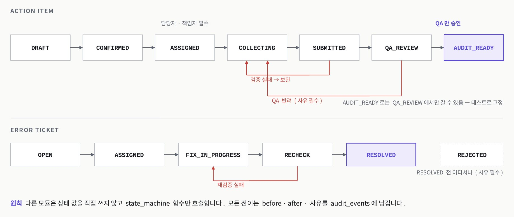
종료를 확인하고 바꾸는 사이에 종료가 끼어들 수 없게
감사가 종료되면 데이터가 더 바뀌면 안 됩니다. 그런데 "열려 있는지 읽고 → 바꾸는" 두 동작 사이에 종료가 끼어들 수 있었습니다. 모든 변경이 감사 세션 행을 SELECT … FOR SHARE로 읽게 해, 종료(배타 락 필요)가 진행 중인 변경이 끝날 때까지 기다리도록 했습니다. 변경끼리는 공유 락이라 서로 막지 않습니다.
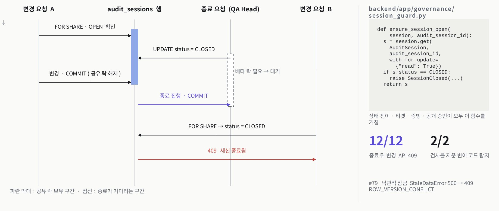
승인 기록을 문서 단위에서 요청 건 단위로 옮겼습니다
팀원 PR을 검토하다, 같은 문서를 여러 건이 공유하면 QA가 승인하지 않은 건도 승인된 것처럼 보이는 문제를 재현했습니다. 승인이 문서 단위로만 저장된 것이 원인이었습니다. 이미 데이터가 있는 테이블이라, 새 칼럼보다 기존 행을 어떻게 채울지가 핵심이었습니다. 추측값 없이 감사 기록의 실제 승인 이벤트로만 백필했습니다.
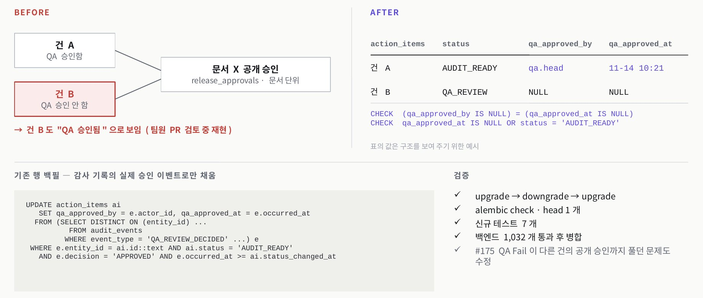
- upgrade → downgrade → upgrade,
alembic check, head 1개 유지 - 신규 테스트 7개, 백엔드 1,032개 통과 후 병합
- 관련 수정 #175: QA가 한 건을 Fail하면 같은 문서를 쓰는 다른 건의 공개 승인까지 풀리던 문제
감사 개념을 결정론적 규칙 6개로 옮기고, 두 방식으로 검증했습니다
같은 입력과 같은 규칙 세트 버전이면 항상 같은 결과가 나오게 했고, 값이 비어 있으면 통과가 아니라 '검토 필요'로 막았습니다(fail-closed). 검증은 정답 라벨 평가와 오류 주입 평가를 따로 했습니다.
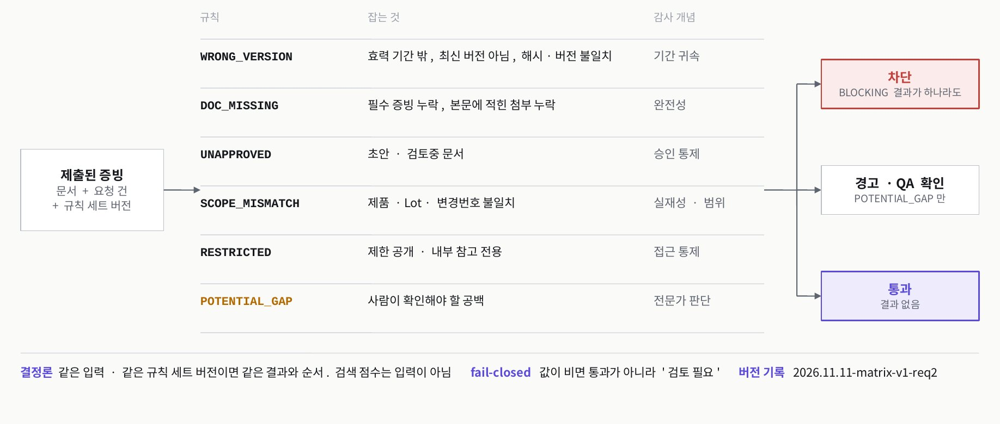
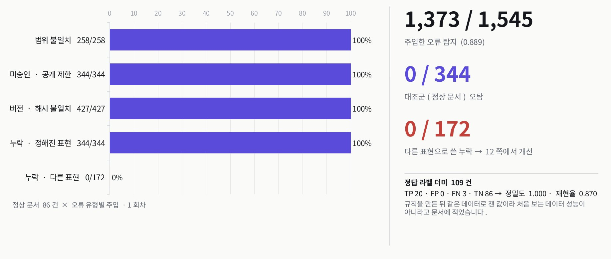
정답 라벨 109건의 정밀도 1.000 · 재현율 0.870은 규칙을 만든 뒤 같은 데이터로 잰 값이라, 처음 보는 데이터의 성능이 아니라고 문서에 적었습니다.
단어가 아니라, 현재 상태를 단정하는 문장만 잡게 바꿨습니다
본문에 적힌 자료 누락을 잡는 규칙이었는데, 정상 문서 86건 중 85건이 절차를 설명하며 "누락"이라는 단어를 썼습니다. 규칙을 고치기 전에 처음 보는 문장 10개를 따로 써 두고, 개정 전·후 코드를 같은 컨테이너·같은 본문·같은 명령으로 나란히 다시 돌렸습니다.
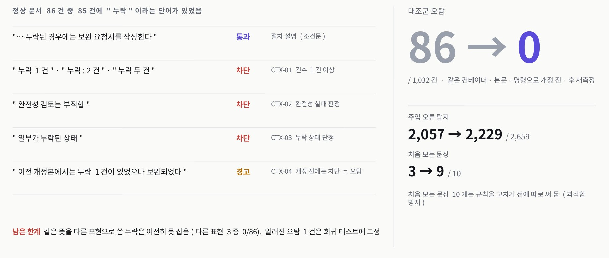
남은 한계: 같은 뜻을 다른 표현으로 쓴 누락은 여전히 못 잡습니다(다른 표현 3종 0/86). 알려진 오탐 1건은 회귀 테스트에 고정했습니다.
외부로 나가는 모든 경로가 관문 다섯 개를 차례로 지납니다
다운로드, ZIP, Front Room 제시 모두 같은 판정 함수를 거칩니다. 승인을 문서 ID·버전·파일 해시에 묶어 승인 뒤 파일이 바뀌면 자동으로 무효가 되고, 결과를 저장하지 않고 요청마다 다시 판정해 사유를 감사 기록에 남깁니다. 열린 BLOCKING 티켓이 있는 문서는 공개 승인 자체를 거부해(#148) 방어를 2겹으로 했습니다.
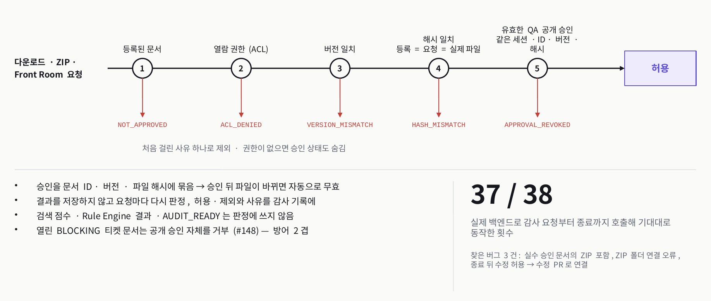
감사 요청부터 종료까지 실제 백엔드로 38번 호출해 37번이 기대대로 동작했습니다. 찾은 버그 3건(실수 승인 문서의 ZIP 포함, ZIP 폴더 연결 오류, 종료 뒤 수정 허용)은 회의 안건과 수정 PR로 연결했습니다.
결과를 보기 전에 기준을 정하고, 넘지 못하면 탈락시켰습니다
후보와 통과 기준을 먼저 등록하고, 시험셋을 해시로 봉인한 뒤 한 번만 실행했습니다. 개발용 질문에서 좋아 보인 후보(L2 로컬 LLM 재정렬, S7 범위·날짜 규칙)도 봉인한 시험셋에서 기준을 넘지 못해 운영 검색은 기준선을 유지했습니다.
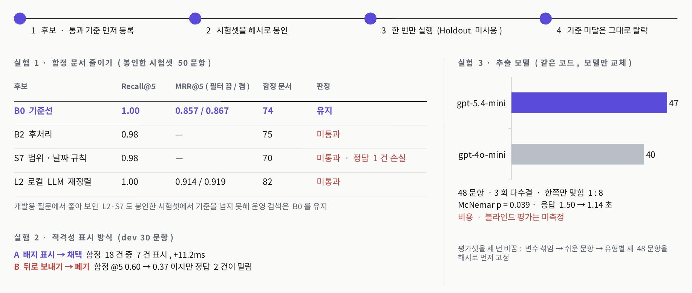
모델 비교(48문항 40 vs 47, McNemar p = 0.039)의 비용과 블라인드 평가는 측정하지 않았습니다.
팀 결과와 내 기여, 그리고 한계
팀 결과
- WBS 전체 진척 100%
- 접수 → 종료 → ZIP 통합 E2E 시나리오 동작
- 최종 발표·E2E 시연 (11/18)
한계와 다음 단계
- 다른 표현의 누락 문장 → 의심 문장만 사람 검토로 보내는 분류 모델을 붙이고 오탐률을 같은 방식으로 측정
- 109건 평가는 규칙을 만든 데이터 → 새 시나리오로 재측정
- 검증 규칙을 도메인별 규칙표로 분리 (미구현)